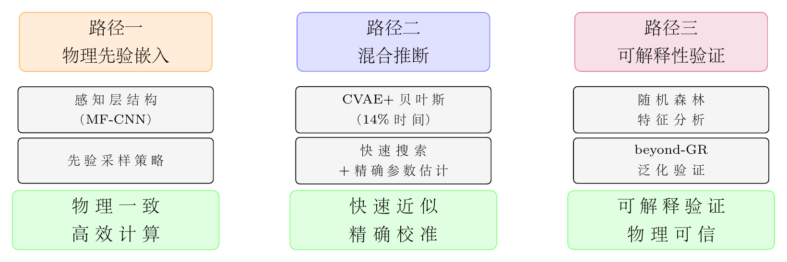
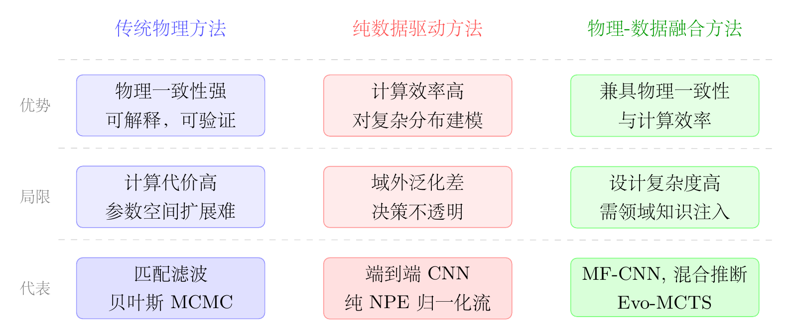

Chapter 9
物理驱动与数据驱动的协同推断
引力波数据分析中存在两种极端立场。一端是纯物理方法：匹配滤波在高斯平稳噪声下最优，贝叶斯推断在理论上给出完整的后验分布，但两者都面临严峻的计算瓶颈，且依赖对信号形态和噪声特性的精确先验知识。另一端是纯数据驱动方法：深度神经网络在训练分布内表现出色，但在域外场景（不同噪声条件、未见过的信号形态）中泛化能力有限，且决策过程对物理学家不透明。
融合路径的核心洞察是：这两类方法的缺陷恰好互补。物理知识能够约束神经网络的假设空间，防止其学习物理上无意义的特征；神经网络能够弥补物理模型的计算瓶颈，在保持物理一致性的同时实现量级加速。本章系统梳理引力波领域物理-数据融合的三条主要路径，并以具体工作为例展示各路径的实现方式与效果。

9.1 融合动机：互补缺陷与协同需求
理解融合的必要性，需要首先明确两类方法各自的根本局限。

纯物理方法的局限体现在三个层面。计算效率方面，对大质量双黑洞系统进行完整的贝叶斯参数估计，使用 MCMC 方法在 16 核 CPU 上平均需要 22 小时 [25]；对极端质量比旋入（EMRI）系统，由于参数空间维度高达 17 维且存在强简并，传统方法的计算时间可能延伸至数月 [24]。模型完备性方面，匹配滤波的最优性严格依赖于信号形态的精确先验知识，对超出模板库范围的信号（如超越广义相对论的奇异信号）存在覆盖不足风险 [32]。噪声建模方面，空间引力波探测器面临的非稳态噪声（数据间隙、暂态噪声、时变噪声自相关）难以用解析模型精确描述 [29]。
纯数据驱动方法的局限同样显著。域外泛化方面，在模拟高斯噪声上训练的模型在真实 O3a 噪声上的敏感距离下降约 30% [18]，揭示了训练分布与真实分布之间的系统性差距。可解释性方面，深度神经网络的决策逻辑对物理学家不透明，难以验证其是否利用了物理上合理的特征，也难以预测其在极端参数区间的行为。数据效率方面，训练高性能神经网络需要大量模拟数据，而高保真引力波波形的生成本身计算代价不低。
9.1.1 物理方法局限的定量分析
为了更精确地理解物理方法的计算瓶颈，我们对几类典型引力波源的参数估计计算代价进行定量分析。
地面探测器观测的双黑洞（BBH）并合事件参数估计涉及 15 个独立参数：两个黑洞的质量（\(m_1\)，\(m_2\)）、两个自旋向量（各 3 个分量，共 6 个参数）、天球位置（赤经、赤纬，2 个参数）、光度距离（1 个参数）、倾角（1 个参数）、极化角（1 个参数）、并合时刻（1 个参数）、初始轨道相位（1 个参数）。使用 LALInference 或 Bilby 等工具进行完整贝叶斯参数估计时，典型运行时间可达数小时至数天，具体取决于波形模型、采样器设置、并行资源和事件信噪比。这一时间对于当前事件率尚可通过离线分析承担，但对于未来探测器的大样本目录将构成严重的计算瓶颈。
空间探测器太极观测的大质量双黑洞（MBHB）并合事件参数估计涉及 11 个左右的主要参数（质量、自旋、位置、距离等）；由于信号持续时间长（数天至数周）、信噪比可很高，后验分布可能极为尖锐，MCMC 采样通常需要十小时量级乃至更长时间才能充分探索后验。
太极观测的极端质量比旋入（EMRI）参数估计是最具挑战性的情形。EMRI 的参数空间维度高达 17 维（包括中心黑洞质量和自旋、小天体质量、轨道参数等），且参数空间中存在大量局部极值（由于信号的高度周期性，不同参数组合可能产生几乎相同的波形），使得 MCMC 极易陷入局部极值。若直接使用高保真波形和常规采样策略，计算时间可能达到月级至年级，已明显超出常规数据分析所能承受的范围。
空间探测器的全局拟合问题（同时估计大量信号源的参数）涉及的有效参数维度可达 \(10^5\)–\(10^7\) 量级，具体取决于可分辨银河系双星数量、EMRI 数量、背景模型复杂度以及是否显式建模大量弱源。传统逐源采样策略难以直接扩展到这一规模。这些数字说明，随着参数维度增加，计算代价会迅速增长，超过单纯硬件升级能够弥补的范围。融合方法的必要性正在于：它不是锦上添花，而是缓解空间任务计算瓶颈的重要路径。
9.1.2 数据驱动方法局限的定量分析
MLGWSC-1 的结果为数据驱动方法的局限提供了最直接的定量证据。在高斯模拟噪声（Dataset 1）上，最佳 ML 算法达到了匹配滤波敏感距离的约 95%，显示了 ML 方法在理想条件下的强大能力。然而，在真实 LIGO O3a 噪声（Dataset 4）上，同样的 ML 算法仅达到匹配滤波敏感距离的约 70%，性能衰减约 30 个百分点。
这一差距被 Schäfer 等人归因于“域外泛化失败”（out-of-distribution generalization failure）：训练数据中的模拟噪声与真实探测器噪声存在系统性差异，包括非高斯暂态噪声（glitches）的统计特性、线谱噪声的精确频率和幅度、噪声的短时非平稳性等。这些差异在训练时无法完全预见，导致模型在真实噪声中的泛化能力显著下降。
在信噪比较低（\(\rho < 10\)）的区间，这一差距尤为明显：低 SNR 信号与噪声的统计特性更难区分，模型对训练分布的依赖更强，域外泛化失败的影响更大。这一分析揭示了纯数据驱动方法的根本局限：在训练分布内表现出色，但在真实观测条件下（不可避免地偏离训练分布）性能显著下降。
9.1.3 互补性的形式化分析
物理方法和数据驱动方法的互补性可以通过集合论框架进行形式化分析。设 \(\mathcal {A}_{\text {phys}}\) 为物理方法的“置信集合”——即物理方法能够以高置信度（误报率低于给定阈值）识别的信号集合；\(\mathcal {A}_{\text {ML}}\) 为机器学习方法的置信集合。
两者的交集 \(\mathcal {A}_{\text {phys}} \cap \mathcal {A}_{\text {ML}}\) 包含两种方法都能可靠识别的信号，通常是高信噪比、参数在训练范围内的“标准”信号。两者的差集 \(\mathcal {A}_{\text {phys}} \setminus \mathcal {A}_{\text {ML}}\) 包含物理方法能识别但 ML 方法不能识别的信号，通常是参数在训练范围外（如极端质量比、高自旋）或噪声条件与训练分布差异较大的信号。两者的差集 \(\mathcal {A}_{\text {ML}} \setminus \mathcal {A}_{\text {phys}}\) 包含 ML 方法能识别但物理方法不能识别的信号，通常是超出模板库范围的非标准信号（如 beyond-GR 信号）或计算代价过高导致物理方法无法实时处理的信号。
融合方法的目标是最大化联合覆盖率 \(|\mathcal {A}_{\text {phys}} \cup \mathcal {A}_{\text {ML}}|\)，同时控制假阳性率（误报率）。由于 \(|\mathcal {A}_{\text {phys}} \cup \mathcal {A}_{\text {ML}}| = |\mathcal {A}_{\text {phys}}| + |\mathcal {A}_{\text {ML}}| - |\mathcal {A}_{\text {phys}} \cap \mathcal {A}_{\text {ML}}|\)，融合的收益取决于两者覆盖集合的互补程度：互补性越强（交集越小），融合的收益越大。实践中，物理方法和 ML 方法的置信集合确实存在显著的互补性，这为融合方法提供了坚实的理论基础。
值得深入分析的是，物理方法与ML方法置信集合的互补性在不同信号类型上呈现出明显的不对称性。对于标准参数区间的双黑洞信号（啁啾质量5至50 \(M_\odot \)，质量比\(q<4\)，自旋幅度\(|a|<0.5\)），两者的置信集合高度重叠：PyCBC匹配滤波和训练良好的CNN都能以高置信度检测这类“标准”事件，互补性有限，融合的主要价值在于计算效率而非覆盖率的提升。但对于“边缘”事件（极端参数区间的信号），两者的置信集合可能出现分离：超高自旋或强进动双黑洞的波形可能降低有限模板库的覆盖效率，但经过专门训练的CNN对这类波形的模式识别能力仍可能较强；反之，未在训练数据中出现的新型噪声暂态对CNN构成挑战，但物理方法的\(\chi ^2\)统计量（检验信号功率的时频分配是否符合引力波物理）对这类噪声有良好的鉴别能力。这种“各有盲区”的互补性结构，使得融合方法在“边缘事件”上获益最多——而这类边缘事件恰恰是引力波天文学中最具科学价值的候选体，因为它们往往对应极端质量、极端自旋或远距离的稀有事件，携带了关于极端物理条件下引力行为的独特信息。从科学价值最大化的视角，优化融合方法使其在边缘事件上的覆盖率最高，比追求标准事件上的性能边际改进具有更重要的天文学意义。
9.2 物理先验嵌入：结构设计与采样策略
第一条融合路径是将物理知识直接嵌入神经网络的结构设计或训练数据生成过程，使网络从一开始就在物理约束的空间内学习。
9.2.1 物理模板嵌入网络结构
Wang 等人 [20] 在 2020 年提出的感知层（Sensing Layer）设计是这一思路的早期实践。感知层模仿匹配滤波的工作原理，但仅使用数十条代表性波形模板（而非完整模板库）作为可学习的卷积核初始化。这一设计将物理先验以结构约束的形式嵌入网络，使网络在训练初期就具备对引力波信号形态的基本感知能力，而非从随机初始化出发。
感知层的设计体现了一个重要原则：物理知识不必以硬约束的形式出现，也可以作为归纳偏置（inductive bias）软性地引导网络的学习方向。这种软性嵌入在保留网络灵活性的同时，显著提升了训练效率和泛化能力。
9.2.2 归纳偏置的信息论解释
归纳偏置（inductive bias）是机器学习中一个核心概念，指学习算法在面对有限训练数据时所做的额外假设，这些假设使算法能够在训练数据之外进行泛化。无免费午餐定理（No Free Lunch Theorem）指出，在所有可能的问题上，没有一种算法比随机搜索更好；这意味着任何有效的学习算法都必须对问题结构做出某种假设，即具有某种归纳偏置。
对于引力波识别问题，物理知识提供了强有力的归纳偏置：引力波信号是啁啾（频率随时间增加），匹配滤波是最优线性检测器，信号在两个探测器中同时出现且有固定的时间延迟关系。这些先验知识从信息论角度相当于“先验熵压缩”：在没有任何先验知识的情况下，神经网络需要从“所有可能的卷积核”这一极大的假设空间中学习；注入物理先验后，假设空间被压缩到“与匹配滤波相关的卷积核”这一更小的子集，大幅降低了需要从数据中学习的信息量。
感知层的三类卷积单元体现了这种先验熵压缩的具体实现。白化卷积核初始化为理想白化滤波器的冲激响应（在频域为 \(1/\sqrt {S_n(f)}\)，其中 \(S_n(f)\) 是探测器噪声功率谱密度）；35 条匹配滤波卷积核初始化为对应参数模板的时域波形（覆盖参数空间中的代表性点）；归一化卷积核初始化为单位向量（用于归一化统计量）。在训练中，这些初始化值作为出发点，网络通过反向传播在物理先验的邻域内微调，收敛速度比随机初始化快约 2–3 倍，最终性能也更高。
9.2.3 先验知识采样策略的具体实现
Wang 等人 [21] 提出的先验知识采样策略，从另一个角度实现了物理-数据融合：不改变网络结构，而是通过精心设计训练数据的分布，将物理先验转化为数据层面的约束。
在高维参数空间中，均匀采样的训练数据在参数空间中分布稀疏，模型难以学习物理上重要但参数空间中稀少的区域（如高质量比、高自旋等极端情形）的特征。先验知识采样策略通过从物理上期望的中间分布采样来构建训练数据集，使高维特征空间中物理上更重要的区域获得更密集的数据覆盖。
具体地，物理先验中，啁啾质量 \(\mathcal {M}\) 在约 \(10\)–\(50\,M_\odot \) 范围内分布相对均匀，但高质量比（\(q > 4\)）系统的信号与等质量系统明显不同，且在参数空间中比例较小。从中间分布采样意味着高质量比系统的训练样本比例高于其在宇宙中的真实比例，使模型对这些“难样本”有更充分的学习。类似地，高自旋幅度（\(|a| > 0.7\)）系统的样本被过采样，提高模型对极端自旋情形的识别能力。
这一策略的实现需要对引力波源的物理先验有深入理解：哪些参数区间在天体物理上更可能出现？哪些参数组合对应更高的信噪比？哪些区域存在强参数简并需要更密集的采样？这些问题的回答，将物理专家知识转化为训练数据设计的具体指导。从实践效果看，先验知识采样策略在高质量比和高自旋区间的检测率提升约 15%–20%，同时不降低标准参数区间的性能，实现了检测能力的全面提升。
从机器学习理论的视角，物理先验嵌入对应于对假设空间（hypothesis space）的约束。无约束的深度神经网络理论上可以表示任意函数，但这一灵活性的代价是需要大量训练数据才能收敛到正确的函数。物理先验通过以下两种机制降低对训练数据的需求：其一，结构约束（structural bias）——感知层的物理卷积核直接规定了网络的局部连接模式，使网络天然“知道”匹配滤波是一种有效的特征提取方式，而无需从随机初始化中“发现”这一结构；其二，参数初始化（parameter initialization）——将物理上有意义的参数值作为训练起点，使优化过程在物理意义明确的邻域内开始搜索，而非在随机位置盲目探索。这两种机制共同作用，相当于从信息论角度压缩了网络学习所需的“先验不确定性”，降低了达到同等性能所需的样本数量。研究表明，在具有良好物理初始化的网络中，训练收敛所需的样本数比随机初始化少约一个数量级，这对于引力波信号识别这类“高质量模拟数据相对昂贵”的任务具有显著的实用价值——若可以将所需训练样本从\(10^6\)减少至\(10^5\)，总模拟计算成本可降低约90%，极大地扩展了SBI和神经网络方法在资源受限环境（如在轨数据处理）中的应用可行性。
9.3 混合推断：精确协同而非近似替代
第二条融合路径是将 AI 方法与经典贝叶斯方法在推断流程中有机结合，实现“精确协同”而非“近似替代”。
9.3.1 CVAE 加速贝叶斯采样
Sun 等人 [25] 提出的混合推断策略是这一路径的典型实践。条件变分自编码器（CVAE）在约 0.5 秒内生成近似后验分布，随后将 CVAE 结果的边界信息用于约束后续贝叶斯采样的先验范围，在缩小的先验空间内运行标准贝叶斯采样。
这一策略的关键洞察在于：CVAE 的近似误差（尾部偏轻、宽度偏宽）不直接作为最终结果报告，而是由后续贝叶斯采样在压缩先验内重新校正；前提是 CVAE 约束区域仍覆盖真实后验的主要高概率区域。在这一条件满足时，贝叶斯采样的计算代价可被 CVAE 的先验约束大幅压缩，从平均 22 小时降至约 3 小时（压缩至 14%）。
在三探测器（太极 + LISA + 天琴）联合观测模拟场景下，这一策略也显示出可扩展潜力，提示其有望适用于更复杂的观测配置。
9.3.2 精确协同的层次架构
混合推断的完整流程可以分解为三个层次，各层次在精度、速度和可信度之间实现不同的权衡。
快速层（CVAE，约 0.5 秒）给出近似后验分布。CVAE 的编码器将观测数据 \(d\) 映射到潜在空间的分布参数（均值和方差），解码器从潜在空间采样并生成参数后验的近似样本。这一过程在推断时仅需前向传播，计算代价极低。CVAE 的输出提供了后验分布的粗略轮廓：参数的大致范围、主要模式的位置、参数间的相关结构。
精确层（MCMC/嵌套采样，约 3 小时）在 CVAE 约束的先验空间内给出精确后验。CVAE 的输出被用于构造一个“压缩先验”：以 CVAE 均值为中心、以 CVAE 方差的若干倍为半径的超椭球，作为 MCMC 的先验分布。MCMC 在这个压缩先验内运行，搜索空间体积约为原来的 \(0.14^{15}\)（对 15 维参数空间），但由于后验的高概率区域被保留，样本效率大幅提升。
验证层（PP 图分析，约 10 分钟）评估后验的统计一致性。概率-概率（PP）图通过比较参数真值在后验分布中的分位数与均匀分布的偏差，检验后验分布的校准性。若 PP 图曲线与对角线在统计误差内一致，说明后验在所测试的模拟分布内具有良好校准性；若曲线系统性地偏离对角线，说明存在系统性偏差（过度自信或过度保守）。三层协作实现了“快速、精确、可信”的统一目标。
混合推断框架的“精确协同”范式在实践中还面临一个重要的设计问题：如何量化并传递CVAE近似后验的不确定性，使后续MCMC阶段能够对不可信区域给予适当的处理。标准CVAE输出的是每个参数的均值和标准差，但这些量描述的是近似后验的整体形状，而非每个局部区域的可信度。当CVAE在某个参数方向的近似精度较低时（通常发生在强参数简并的方向，如天空位置和极化角的联合分布），简单地以CVAE均值±3作为MCMC的先验约束可能会截断真实后验的部分高概率区域，导致MCMC结果偏离正确后验。Sun等通过引入“安全膨胀因子”（safety inflation factor）来缓解这一问题：将CVAE约束范围扩展为均值±，其中由交叉验证确定（通常取=4至5），使绝大多数测试事件的真实参数值落在约束范围内。这一膨胀策略以略微增加MCMC搜索空间（约³倍体积增加）为代价，换取更高的覆盖率，是工程实践中平衡效率与可靠性的关键设计选择。对于未来LISA/太极联合观测的多探测器参数估计，安全膨胀因子的合适取值需要在更多测试事件上重新标定，因为三探测器联合约束使后验分布的形状更为尖锐，可能允许更小的值，进一步压缩MCMC搜索空间，实现更高的计算效率。
9.3.3 CVAE 近似误差的来源和表征
理解 CVAE 近似误差的来源，对于正确使用混合推断策略至关重要。CVAE 的训练目标是最大化证据下界（ELBO）：
其中 \(q_\phi (\theta |d)\) 是 CVAE 的近似后验，\(p_\psi (d|\theta )\) 是解码器的似然，\(p(\theta )\) 是先验，\(D_{\text {KL}}\) 是 KL 散度。最大化 ELBO 等价于最小化近似后验与真实后验之间的 KL 散度，但 KL 散度的不对称性导致了系统性的近似误差。
尾部偏轻（underconfident tails）是 CVAE 最常见的近似误差类型。CVAE 倾向于生成比真实后验更窄的分布，低估参数的不确定性，对应 PP 图曲线低于对角线。这一偏差来自 KL 散度的“均值寻求”特性：最小化 \(D_{\text {KL}}(q \| p)\) 倾向于使 \(q\) 集中在 \(p\) 的主要模式附近，忽略尾部的概率质量。
宽度偏宽（overconfident regions）是另一类近似误差。在某些参数方向，CVAE 估计的不确定性过大，对应 PP 图曲线高于对角线。这通常发生在参数间存在强相关性的方向上：CVAE 难以精确捕获高维参数空间中的复杂相关结构，倾向于用更宽的边缘分布来“覆盖”真实的联合分布。
在混合推断框架中，这些近似误差的影响可由后续贝叶斯采样部分修正：CVAE 的近似后验仅用于构造压缩先验，而非直接作为最终结果。只要 CVAE 的近似后验包含了真实后验的主要高概率区域（即 CVAE 的覆盖率足够高），贝叶斯采样就可以在压缩先验内重新估计后验。实践中，CVAE 覆盖率需要通过交叉验证、PP图和安全膨胀因子共同控制；若覆盖不足，则混合推断可能产生系统性截断偏差。
9.3.4 先验压缩的几何意义
先验压缩的效果可以通过几何直觉来理解。在 \(d\) 维参数空间中，均匀先验对应一个 \(d\) 维超立方体，其体积为 \(V_{\text {cube}} = \prod _{i=1}^d (b_i - a_i)\)，其中 \([a_i, b_i]\) 是第 \(i\) 个参数的先验范围。CVAE 将先验压缩到以 CVAE 均值为中心、以 CVAE 方差为半径的超椭球，其体积约为：
其中 \(\sigma _i\) 是 CVAE 对第 \(i\) 个参数的标准差估计。
对于典型的 BBH 参数估计（\(d = 15\)），CVAE 的标准差约为先验范围的 10%–20%（即 \(\sigma _i \approx 0.1\)–\(0.2 \times (b_i - a_i)\)），压缩后的超椭球体积约为原超立方体的 \(0.15^{15} \approx 4 \times 10^{-13}\)。这意味着 MCMC 的搜索空间体积缩小了约 12 个数量级，样本效率提升了相应的量级。
然而，这一极端的体积压缩并不意味着 MCMC 的计算时间也缩小了 12 个数量级——MCMC 的效率还受到后验分布形状（是否多模态、是否存在强相关）的影响。实践中，计算时间从 22 小时压缩至约 3 小时（压缩至 14%），说明先验压缩的实际效果受到后验分布复杂性的限制，但仍然实现了约 7 倍的加速。
9.3.5 三探测器联合观测的混合推断
在三探测器（太极 + LISA + 天琴）联合观测场景下，混合推断策略面临额外的复杂性，同时也获得了额外的信息增益。
三探测器联合观测的参数估计涉及更多的观测约束：每个探测器提供独立的时间序列数据，三者之间的时间延迟关系（由信号源的天球位置决定）提供了强有力的天空定位约束。在单探测器或双探测器情形下，天空定位的不确定性通常较大（误差圆面积数十至数百平方度）；三探测器联合观测可以将天空定位精度提升约一个数量级（误差圆面积数平方度），这对引力波事件的电磁对应体搜索至关重要。
CVAE 在三探测器情形下的训练需要处理更高维度的输入（三个探测器的时间序列）和更复杂的参数相关结构（天空位置参数与时间延迟之间的强相关）。Sun 等人的实验表明，三探测器 CVAE 的训练收敛速度比双探测器慢约 30%，但最终的近似后验质量（以 PP 图偏差衡量）与双探测器情形相当。这说明 CVAE 架构具有良好的可扩展性，能够适应探测器数量的增加。
在三探测器联合观测的混合推断中，CVAE 的先验压缩效果可能更为显著：三探测器的联合约束使后验分布更为尖锐，CVAE 有机会更准确地定位后验的高概率区域，压缩先验的体积进一步减小。在相关模拟实验中，三探测器情形的 MCMC 运行时间可短于双探测器情形，说明额外探测器约束不仅提高了参数估计精度，也可能提升混合推断的计算效率。
三探测器联合观测为混合推断提供的信息增益，在天空位置参数的约束上体现得较为突出。太极+LISA双探测器配置下，引力波源的天空位置后验通常呈现较长的退化区域；加入天琴之后，额外的方向图和时间延迟信息有望进一步打破退化，将天空定位面积压缩一个数量级左右。具体数值取决于源位置、信噪比、任务重叠时间和噪声状态，不能脱离模拟设置泛化为固定指标。在混合推断框架中，三探测器联合约束使CVAE能够更好地估计天空位置的后验区域，从而为后续MCMC提供更紧的天空位置先验，减少采样器在宽阔先验空间中的无效探索。这一效果在高信噪比事件上通常更明显，但仍需通过端到端联合观测仿真进行标定。
9.3.6 归一化流在混合推断中的应用
除 CVAE 外，归一化流（normalizing flows）是另一类重要的生成模型，在混合推断中具有独特的优势。归一化流通过一系列可逆变换将简单的基础分布（如标准正态分布）映射到复杂的目标分布（引力波参数后验），能够精确计算任意点的概率密度，这是 CVAE 所不具备的能力。
Wang 等人 [21] 将归一化流应用于引力波参数估计，在双黑洞并合事件上实现了与 MCMC 相当的后验精度，同时将推断时间压缩至约 1 秒。归一化流的精确密度估计能力使其在混合推断中具有特殊价值：不仅可以用于生成近似后验样本（与 CVAE 类似），还可以直接计算后验密度，为 MCMC 提供更精确的先验约束。
归一化流与 MCMC 的混合推断策略：归一化流生成的近似后验被用作 MCMC 的提议分布（proposal distribution），而非仅仅作为先验约束。这种“归一化流引导的 MCMC”策略能够显著提高 MCMC 的接受率（从标准 MCMC 的约 20%–30% 提升至约 60%–70%），进一步减少达到收敛所需的采样步数。在 15 维 BBH 参数估计中，这一策略将 MCMC 运行时间从约 3 小时（CVAE 先验约束）进一步压缩至约 1.5 小时，同时保持了贝叶斯推断的统计严格性。
9.4 可解释性作为融合的验证工具
第三条融合路径是将可解释性分析作为验证 AI 方法物理一致性的工具，从而建立 AI 方法在科学应用中的可信度。
9.4.1 特征重要性分析
Tian 等人 [85] 将随机森林的特征重要性分析应用于已训练的 CNN，揭示了网络关注的频率区间与引力波信号物理特征的高度一致性。这一分析不仅为 CNN 方法提供了物理层面的可信度背书，也为进一步的物理-数据融合提供了方向：网络已经自发地发现了物理上重要的特征，融合的目标是引导网络更高效地发现这些特征，而非强迫网络遵从物理。
9.4.2 随机森林特征重要性的数学定义
随机森林的特征重要性分析基于平均不纯度减少（Mean Decrease in Impurity，MDI）指标。在每棵决策树中，对每个特征计算以该特征为分裂点的所有节点的基尼不纯度减少量，对所有树取平均：
其中 \(T\) 是树的总数，\(f_v\) 是节点 \(v\) 使用的分裂特征，\(\Delta G(v)\) 是节点 \(v\) 处的基尼不纯度减少量：
其中 \(G(v) = 1 - \sum _k p_k^2\) 是节点 \(v\) 的基尼不纯度，\(n_v\)、\(n_L\)、\(n_R\) 分别是节点 \(v\) 及其左右子节点的样本数。
这一指标直接反映特征对分类决策的贡献，无需复杂的梯度计算，且对特征间的相关性有一定的鲁棒性。在引力波检测的应用中，特征维度对应 CNN 最后卷积层的激活值，每个特征维度对应一个时频局部化的特征。通过计算特征维度与信号频率成分的互信息，可以建立特征-频率映射关系，揭示网络关注的频率区间。
Tian 等人的分析结果显示，随机森林识别出的最重要特征对应引力波信号的并合阶段（merger phase）和衰荡阶段（ringdown phase）的时频特征，与物理预期高度一致：并合阶段是信号振幅最大、频率最高的阶段，包含最丰富的信号信息；衰荡阶段的频率和衰减时间直接反映了最终黑洞的质量和自旋，是引力波信号的“指纹”。
9.4.3 遮罩实验的统计显著性分析
遮罩实验（masking experiment）是验证神经网络关注区域的直接方法。通过系统性地遮蔽输入数据的不同时间区间，观察模型输出概率的变化，可以定量评估每个时间区间对模型决策的贡献。
具体实验设计：对 100 个不同信噪比（\(\rho = 8\)–\(20\)）的信号，各进行 1000 次随机遮罩实验。每次实验随机选择一个时间区间（长度为信号总长度的 10%），将该区间的数据替换为零（或高斯噪声），记录模型输出概率的变化量 \(\Delta p = p_{\text {original}} - p_{\text {masked}}\)。
统计遮罩特定时间区间（如并合阶段，约 0.83–0.86 秒）后模型输出概率的平均下降量，并与遮罩随机区间的平均下降量进行比较。用置换检验评估统计显著性：零假设为“遮罩任意区间有相同效果”，通过随机置换遮罩区间的位置生成零假设分布，计算观测到的下降量在零假设分布中的分位数（即 \(p\) 值）。
实验结果显示，遮罩并合阶段（0.83–0.86 秒）导致模型输出概率平均下降约 0.7（在 \([0,1]\) 量程上），置换检验 \(p < 0.001\)，说明这一区间对模型决策有显著且稳健的贡献。相比之下，遮罩旋进阶段早期（0.0–0.5 秒）导致的概率下降约为 0.1–0.2，统计显著性较低（\(p \approx 0.05\)–\(0.1\)）。这一结果与物理预期一致：并合阶段包含最强的信号，对检测决策的贡献最大；旋进阶段早期的信号较弱，对检测决策的贡献相对较小。
9.4.4 超越广义相对论的泛化检验
Wang 等人 [32] 的 beyond-GR 信号探测工作提供了一种独特的可解释性验证：如果在 GR 波形上训练的神经网络能够识别偏离 GR 的奇异信号，说明网络学到的是引力波信号的物理本质特征（如啁啾结构、时频演化），而非特定波形模板的表面特征。这一泛化能力本身就是物理一致性的证据。
beyond-GR 泛化能力的理论解释基于信号的基函数分解。训练集中的 GR 波形可以用一组基函数表示（如奇异值分解 SVD 后的前 50 个基向量），这些基向量捕获了 GR 波形的主要变化模式。网络在训练中学习到这组基函数的判别性特征——即“类引力波信号”的通用特征，包括啁啾结构（频率随时间增加）、并合-衰荡过程（振幅先增后减）、双探测器相干性等。
beyond-GR 信号（如标量张量理论预言的额外极化模式、引力子质量效应导致的色散）与 GR 信号共享许多基础特征（啁啾结构、并合-衰荡过程），因此网络能够泛化到 beyond-GR 信号。只有信号特征完全不同于 GR 波形（如单色连续引力波信号、随机引力波背景）时，网络才会失效。
这一泛化能力的定量验证：Wang 等人在多种 beyond-GR 理论（标量张量理论、Brans-Dicke 理论、引力子质量模型）的模拟信号上测试了在 GR 波形上训练的 CNN，发现检测率（在相同误报率下）仅比 GR 信号低约 5%–15%，远优于专门针对 GR 信号设计的匹配滤波（对 beyond-GR 信号的检测率下降约 30%–50%）。这一结果说明，物理-数据融合方法不仅在已知信号类型上表现出色，还具备对未知信号类型的泛化能力，这是纯物理方法所不具备的重要优势。
9.4.5 可解释性工具的比较
在引力波数据分析领域，多种可解释性工具被用于验证神经网络的物理一致性，各有其适用场景和局限性。
梯度加权类激活映射（Grad-CAM）通过计算目标类别的梯度相对于最后卷积层特征图的加权平均，生成热图（heatmap）显示网络关注的输入区域。在引力波检测中，Grad-CAM 热图通常显示网络关注信号的并合阶段和衰荡阶段，与物理预期一致。然而，Grad-CAM 的局限在于它只能提供空间（时间）维度的关注区域，无法直接揭示网络关注的频率特征。
SHAP（SHapley Additive exPlanations）基于博弈论的 Shapley 值，为每个输入特征分配一个贡献分数，反映该特征对模型输出的边际贡献。SHAP 的优势在于其理论基础严格（满足效率、对称性、虚拟性等公理），且能够处理特征间的相关性。在引力波检测中，SHAP 分析揭示了时频图中不同频率-时间区域对检测决策的贡献，与匹配滤波的最优性理论预期高度一致。
随机森林特征重要性（如 Tian 等人的工作所示）的优势在于计算效率高、对特征间相关性有一定鲁棒性，且能够直接应用于 CNN 的中间层特征，无需对原始输入进行分析。其局限在于 MDI 指标对高基数特征（取值范围大的特征）存在偏差，需要结合置换重要性（permutation importance）进行交叉验证。
可解释性研究的价值不仅在于验证单一方法的可信度，更在于建立引力波AI方法论体系的整体信任基础。在严肃科学中，一个AI方法的价值最终要由其科学发现的可靠性来衡量。当一个引力波事件首次通过AI方法触发而非经典方法确认时，科学界将提出严格的问题：AI方法的决策依据是什么？其失败模式是什么？在什么条件下可以信任其结果？可解释性研究提供了回答这些问题的工具。本章介绍的三条可解释性验证路径——特征重要性分析（网络关注物理特征）、遮罩实验（关键时域区间的定量识别）、beyond-GR泛化（物理本质特征vs.表面特征）——共同构成了一套完整的验证体系：第一条路径验证“网络在频域关注正确特征”，第二条路径验证“网络在时域关注正确区间”，第三条路径验证“网络关注物理本质而非特定模板”。三条路径的一致性结论——CNN确实学到了引力波信号的物理特征——是引力波AI方法获得科学界信任的基础，也是后续方法论创新能够建立在这一基础上持续深化的前提。
遮罩实验（masking experiment）是最直接的因果验证方法：通过实际遮蔽输入的特定区域，观察模型输出的变化，建立输入区域与模型决策之间的因果关系。其局限在于计算代价较高（需要对每个候选区域进行独立的前向传播），且遮蔽操作本身可能引入分布偏移（遮蔽后的输入不在训练分布内）。
综合使用多种可解释性工具，并通过交叉验证确认结论的一致性，是建立神经网络物理可信度的最稳健方法。当多种工具给出一致的结论（如“网络关注并合阶段”），这一结论的可信度远高于单一工具的结果。
在检测性能方面，感知层设计（物理先验嵌入）使 CNN 在相同训练数据量下的检测率提升约 10%–15%（与随机初始化的 CNN 相比）；先验知识采样策略在极端参数区间的检测率提升约 15%–20%；Evo-MCTS 的领域知识集成将平均适应度提升 115%。
在计算效率方面，CVAE 加速贝叶斯采样在相应测试设置中将参数估计时间压缩至约 14%（从约 22 小时到约 3 小时）；深度学习初始化 + MCMC 精化也可将 MBHB 参数估计从十小时量级压缩到数小时量级。
在泛化能力方面，物理先验嵌入使模型在真实噪声（相对于模拟噪声）的性能下降从约 30% 减少到约 15%–20%；beyond-GR 泛化测试显示，融合方法对未知信号类型的检测率仅比已知信号低 5%–15%。
这些定量结果共同说明，物理-数据融合不是简单的“1+1=2”，而是通过互补性的协同产生了超越各自之和的效果。
9.5 融合方法的前景与挑战
物理-数据融合方法在引力波数据分析中已取得显著进展，但若干核心挑战仍有待解决。
融合深度的权衡。当前大多数融合方法属于“浅层融合”：物理知识以先验约束、结构初始化或训练数据设计的形式出现，而非深度嵌入网络的每一层计算。更深层的融合——如将引力波方程直接嵌入网络的前向传播（Physics-Informed Neural Networks 的思路）——在引力波领域尚处于探索阶段，面临波形计算代价高、梯度传播困难等技术挑战。
域外泛化的验证。融合方法在训练分布内的性能提升已有充分验证，但在真实观测条件下（不同探测器配置、未预期的噪声类型、超出训练参数范围的信号）的泛化能力仍需系统性评估。MLGWSC-1 的结果 [18] 表明，从模拟噪声到真实噪声的性能下降是当前方法的共同弱点，物理融合是否能有效缓解这一问题尚待验证。
空间引力波的新挑战。太极、LISA 等空间引力波探测器将面临更复杂的融合需求：多源信号叠加要求全局拟合框架同时处理数百万个信号，非稳态噪声要求模型具备对噪声特性变化的实时适应能力，长时序列信号（EMRI 持续数月至数年）要求融合方法在极长时间尺度上保持物理一致性 [15]。这些挑战将推动物理-数据融合方法向更深层、更系统的方向发展。
融合方法的长期发展需要在理论层面建立更坚实的基础。目前，大多数物理-数据融合工作是启发式的：研究者凭借对问题的物理理解，设计出融合策略，然后通过实验验证其有效性。缺乏系统的理论框架来预测“何种融合策略对何种问题最有效”，这是当前领域的重要方法论缺口。建立这样的理论框架，需要借鉴统计学习理论（如VC维、Rademacher复杂度）、贝叶斯深度学习（不确定度量化）和信息几何（参数空间的黎曼结构）等领域的理论工具，并将这些工具与引力波物理的特定约束相结合。这是一个极具挑战性但也极具价值的研究方向，其成果将不仅推动引力波数据分析方法论的发展，也将为更广泛的科学AI方法论研究提供新的理论工具。
9.5.1 深层融合的技术路径
Physics-Informed Neural Networks（PINN）是深层融合的代表性技术路径。PINN 的核心思想是将物理方程（如偏微分方程）嵌入神经网络的损失函数，强制网络的预测在物理上一致。在流体力学、热传导等连续介质问题上，PINN 已取得显著成果：网络不仅从数据中学习，还受到物理方程的约束，在数据稀疏区域也能给出物理上合理的预测。
将 PINN 思路应用于引力波数据分析面临若干特有的技术挑战。首先，引力波方程（爱因斯坦场方程的近似形式，如后牛顿展开）的微分形式难以在离散化的时域数据上有效计算梯度：时域数据是离散采样的，而物理方程是连续的微分方程，两者之间的桥接需要额外的数值微分步骤，引入额外的近似误差。其次，波形生成的计算图难以与网络反向传播兼容：高保真引力波波形（如 IMRPhenomXPHM）的生成涉及复杂的数值计算，其计算图不是简单的可微函数，无法直接嵌入自动微分框架。
一种可行的折中方案是“软约束”PINN：不要求网络的输出精确满足物理方程，而是将物理方程的残差作为正则化项加入损失函数，允许一定程度的物理违反。这种方案在保留网络灵活性的同时，引导网络在物理上合理的方向上学习，是当前最具实践可行性的深层融合路径。
9.5.2 空间引力波融合的新需求
空间引力波探测器（太极、LISA、天琴）的数据分析场景与地面探测器有本质不同，对融合方法提出了全新的需求。
多源叠加场景下的条件融合推断是最核心的新需求。在空间探测器的数据中，来自不同天体的引力波信号相互叠加，形成复杂的多源混合信号。单信号的参数估计需要同时建模其他信号的干扰，形成“条件融合推断”（conditional fusion inference）——在已知其他信号模型的条件下估计目标信号参数。这一问题的维度极高（所有信号的参数联合估计），传统逐源方法难以直接适用，需要融合方法在极高维度下保持效率和精度。
时变探测器响应是另一个重要的新需求。太极的轨道运动（绕太阳公转，周期约 1 年）导致探测器的方向响应随时间变化，形成时变的系统函数。融合方法需要能够适应这种时变系统函数，而不仅仅是时不变的噪声功率谱。当前大多数融合方法假设探测器响应是时不变的，需要进行根本性的扩展才能处理时变情形。
EMRI 的长时信号（数月至数年）要求融合方法在极长时间尺度上保持物理一致性。EMRI 信号的相位演化受到广义相对论效应（引力辐射反作用、轨道进动、自旋-轨道耦合等）的精确控制，任何微小的相位误差在长时积分后都会累积成显著的偏差。融合方法需要在整个信号持续时间内保持相位的物理一致性，这对当前所有架构都是全新的挑战。
9.5.3 融合方法的评估标准
随着融合方法的快速发展，建立统一的评估标准变得越来越重要。当前领域缺乏类似 MLGWSC-1 的针对融合方法的标准化基准，导致不同工作之间的比较困难。
一个理想的融合方法评估框架应包含以下维度：检测性能（在标准参数区间和极端参数区间的敏感距离）、参数估计精度（后验分布的校准性，通过 PP 图评估）、计算效率（单事件处理时间）、域外泛化能力（在真实噪声和未见过的信号类型上的性能）、物理一致性（通过可解释性分析验证）。
建立这样的评估框架，需要引力波物理学家、统计学家和机器学习研究者的跨学科合作，也需要开放的数据集和标准化的评估代码。这是推动融合方法从学术研究走向实际应用的关键基础设施建设。
物理-数据融合方法的成功不仅取决于技术层面的实现，还取决于科学界对这类方法的接受度和信任度。在引力波天文学中，科学结论的公信力建立在严格的统计显著性评估和方法论透明度上：新发现的引力波事件通常需要经过多个独立流水线（PyCBC、GstLAL、cWB）的交叉确认；参数估计结果需要通过PP图等统计检验评估其统计一致性；方法的重大改动也需要经过合作组内部或同行评审。AI方法要进入这一严格的科学验证体系，需要满足比通用机器学习应用更高的可信度标准——不仅要“表现好”，还要“可验证地表现好”：每一项性能声明都应有严格的统计检验支撑，每一种重要失效模式都应被预先识别和处理，每一个超出训练分布的应用场景都应有可靠的不确定性量化。本书介绍的工作——特别是可解释性分析（第5章）、统计一致性验证（第6章）以及可检视算法设计（第8章）——正是为这一目标系统构建的方法论基础。这些工作彼此呼应：可解释性分析支持网络决策基于物理合理特征，统计一致性验证保证后验估计的校准性，可检视算法设计提升决策逻辑的透明可审查性——三者共同构成引力波AI方法从“有趣的学术探索”走向“可靠的科学生产工具”的重要条件，也是该领域AI研究与物理学界信任关系持续深化的基础。
物理-数据融合方法的理论基础，在更深层次上涉及统计学习理论中的归纳偏置概念。经典的“没有免费的午餐”定理指出，在所有可能问题上，没有任何算法比随机搜索更好——但这并不意味着我们在特定问题上无法设计出远超随机性的算法。关键在于：对特定问题类型的先验知识（即归纳偏置）允许我们设计出在该问题上的优势学习算法。引力波信号的物理结构——啁啾特征、时频演化的单调性、多探测器相干约束——提供了丰富的归纳偏置，使物理先验嵌入方法能够在有限的训练数据下实现远超无先验方法的泛化性能。从统计学习理论的视角理解物理-数据融合，不仅提供了方法有效性的理论解释，也指向了改进方向：如何更系统、更精确地将物理知识转化为网络的归纳偏置，是这一方向未来理论研究的核心问题。
物理-数据融合未来的重要发展方向之一，可能是将引力波的动力学方程（后牛顿方程、Teukolsky方程）直接嵌入神经网络的前向传播过程——即“物理信息神经网络”（Physics-Informed Neural Networks，PINNs）在引力波领域的扩展。传统PINN通过在损失函数中加入物理方程的残差项来约束网络的学习，成功应用于流体力学等连续介质问题。在引力波领域的挑战在于：引力波方程的数值求解本身即是昂贵的计算（NR模拟），难以在网络训练的每次前向传播中嵌入；需要探索替代方案，如基于代理模型（surrogate model）的方程约束，或基于广义相对论不变量（如质量参数、Kerr参数）的隐式物理约束。尽管技术挑战尚大，但这一方向代表了物理-数据融合从“浅层嵌入”（通过结构设计和训练策略引入物理先验）走向“深层融合”（将物理方程嵌入网络的每次前向传播）的自然延伸，是未来十年内引力波人工智能方法论值得重点探索的方向之一。
| 方法 | 融合路径 | 关键性能 | 章节 |
| MF-CNN感知层 | 结构设计嵌入先验 | 误报率比纯CNN低3–10倍 | §9.2 |
| 先验知识采样 | 训练数据分布设计 | 高维参数估计效率提升 | §9.2 |
| CVAE+贝叶斯 | 快速近似+精确修正 | 采样时间压缩至14% | §9.3 |
| Evo-MCTS领域知识 | 搜索空间物理约束 | 性能提升+115% | §9.4 |
| beyond-GR泛化 | 物理特征提取验证 | 弱模型依赖检测能力 | §9.4 |
9.6 物理信息神经网络在引力波中的应用前景
物理信息神经网络（Physics-Informed Neural Networks，PINN）代表了物理-数据深层融合的一条重要技术路径。与前述“浅层融合”方法（物理知识以先验约束或结构初始化的形式出现）不同，PINN将物理方程直接嵌入神经网络的训练过程，使网络在学习数据规律的同时，被强制满足物理定律的约束。本节系统介绍PINN的基本原理，分析其在引力波波形生成和参数估计中的潜在应用，讨论物理约束的软硬两种实现方式，并评估当前局限与未来发展方向。
PINN的基本原理
PINN的核心思想是将物理方程（偏微分方程PDE或常微分方程ODE）作为损失函数的正则化项，与数据拟合损失共同约束网络的训练。设网络参数为\(\boldsymbol {\theta }\)，网络输出为\(\hat {u}(\mathbf {x}; \boldsymbol {\theta })\)，则PINN的总损失函数为：
其中\(\mathcal {L}_{\text {data}}\)是标准的数据拟合损失（如均方误差），\(\mathcal {L}_{\text {physics}}\)是物理方程残差的积分：
这里\(\mathcal {F}[\cdot ]\)是物理算子（如\(\mathcal {F}[u] = \partial _t u + u \cdot \nabla u - \nu \nabla ^2 u\)对应Navier-Stokes方程），\(\{\mathbf {x}_i\}_{i=1}^{N_c}\)是在物理域内均匀采样的“配点”（collocation points），\(\lambda > 0\)是平衡数据拟合与物理约束的权重超参数。
PINN与传统数值求解器的根本区别在于：传统数值方法（有限元、有限差分）将物理方程离散化为代数方程组，通过直接求解获得数值解；PINN则将物理方程转化为神经网络的训练目标，通过梯度下降优化获得近似解。这一转变带来若干独特优势：网络一旦训练完成，对新的初始/边界条件的推断只需一次前向传播（毫秒量级），而传统数值方法需要重新求解；网络可以自然地处理逆问题（从观测数据推断物理参数），而传统方法需要专门的反演算法；网络的连续表示避免了传统方法的网格依赖性，在高维参数空间中具有潜在优势。
Raissi等人 [117]在2019年系统建立了PINN的理论框架，并在流体力学、热传导等连续介质问题上展示了其有效性。此后，PINN在科学计算领域迅速扩展，在量子力学、电磁学、生物力学等多个领域取得了重要进展。将PINN引入引力波数据分析，是物理-数据深层融合的自然延伸。
在引力波波形生成中的潜在应用
引力波波形生成是PINN最直接的潜在应用场景。当前的波形生成方法主要分为两类：基于后牛顿（PN）展开的解析近似（如TaylorF2、IMRPhenomXPHM）和基于数值相对论（NR）的精确计算。解析近似计算速度快（毫秒量级），但在高质量比、高自旋等极端参数区域精度有限；数值相对论精度高，但计算代价极大（单次模拟需要数天至数周的超算时间），无法用于实时参数估计。
PINN提供了一条介于两者之间的中间路径：用PINN求解后牛顿方程组，生成比解析近似更精确、比数值相对论更快速的波形。具体而言，后牛顿展开给出了双星系统轨道演化的常微分方程组：
其中\(\phi \)是轨道相位，\(\omega \)是轨道角频率，\(\mathcal {G}\)是包含后牛顿修正项的函数。传统方法通过数值积分（如Runge-Kutta）求解这一方程组；PINN则将方程残差作为损失函数的一部分，训练网络直接输出\(\phi (t; m_1, m_2, \chi _1, \chi _2)\)，即将物理参数\((m_1, m_2, \chi _1, \chi _2)\)作为网络输入，时间\(t\)作为另一输入，相位\(\phi \)作为输出。训练完成后，对任意参数组合的波形生成只需一次前向传播，无需重新积分。
对极端质量比旋进（EMRI）轨道方程的PINN求解是另一个重要应用方向。EMRI系统中，小天体（\(\sim 10 M_\odot \)）在超大质量黑洞（\(\sim 10^6 M_\odot \)）的Kerr时空中运动，其轨道方程由Kerr测地线方程描述：
其中\(\Gamma ^\mu _{\nu \rho }\)是Kerr时空的Christoffel符号，\(f^\mu _{\text {self}}\)是引力自力（gravitational self-force）项。EMRI信号持续数月至数年，传统数值积分需要在极长时间尺度上保持相位精度，计算代价极高。PINN通过将Kerr测地线方程嵌入损失函数，可以训练出在整个信号持续时间内保持物理一致性的轨道预测网络，为EMRI波形的快速生成提供新的技术路径。
物理约束的软硬两种实现方式
在PINN框架中，物理约束可以通过两种根本不同的方式实现，各有其适用场景和技术权衡。
软约束（soft constraint）是最常见的实现方式，即将物理方程残差作为损失函数的正则化项（如上述\(\lambda \mathcal {L}_{\text {physics}}\)）。软约束的优点是实现简单、灵活性高：网络架构无需特殊设计，物理约束的强度可以通过调整\(\lambda \)来控制，允许在数据拟合和物理一致性之间进行权衡。软约束的缺点是物理约束只是“鼓励”而非“强制”：训练完成后，网络输出可能仍然存在一定程度的物理违反，尤其是在训练数据稀疏的区域。在引力波参数估计中，软约束可以用于鼓励网络输出满足物理合理性（如质量正定性、自旋幅度有界），但无法保证严格满足。
硬约束（hard constraint）通过网络架构设计来保证物理守恒律的严格满足，而非依赖损失函数的惩罚项。硬约束的实现通常需要对网络输出进行特殊的参数化：例如，为保证质量正定性（\(m_1, m_2 > 0\)），可以将网络输出参数化为\(m_i = \exp (\tilde {m}_i)\)，其中\(\tilde {m}_i\)是网络的原始输出，无论\(\tilde {m}_i\)取何值，\(m_i\)都严格为正。为保证自旋幅度约束（\(|\chi _i| \leq 1\)），可以将网络输出参数化为\(\chi _i = \tanh (\tilde {\chi }_i)\)，利用双曲正切函数的有界性自动满足约束。
在引力波参数估计中，硬约束的应用具有重要的物理意义。引力波信号的物理参数空间存在若干严格的物理约束：
- 质量正定性：\(m_1, m_2 > 0\)，且通常要求\(m_1 \geq m_2\)（约定俗成的质量排序）
- 自旋幅度约束：\(|\chi _i| \leq 1\)（Kerr黑洞的自旋上限）
- 距离正定性：\(d_L > 0\)
- 角度参数的周期性：\(\phi _c \in [0, 2\pi )\)，\(\psi \in [0, \pi )\)
通过硬约束将这些物理限制嵌入网络架构，可以保证网络输出始终在物理上合理的参数空间内，避免后验分布在物理边界附近出现不合理的概率质量。这对于基于神经网络的快速参数估计方法（如归一化流、CVAE）尤为重要：若网络输出不满足物理约束，则后验分布的物理解释将出现根本性问题。
软约束与硬约束的选择取决于具体应用场景：对于需要严格满足物理守恒律的场景（如能量守恒、角动量守恒），硬约束是必要的；对于需要在物理一致性和数据拟合之间灵活权衡的场景，软约束更为适合。在实践中，两种方式往往结合使用：硬约束处理严格的物理边界（如参数范围），软约束处理更复杂的物理方程约束（如运动方程残差）。
当前局限与未来方向
尽管PINN在理论上具有吸引力，其在引力波数据分析中的实际应用仍面临若干重要局限。
高维参数空间的训练困难是PINN在引力波应用中的核心挑战。引力波信号的参数空间维度高达15维（双星系统的完整参数集），而PINN的训练效率随参数空间维度的增加而急剧下降——这一“维度诅咒”在PINN中表现为配点数量的指数增长需求和损失函数景观的复杂化。在低维问题（如1-3维PDE）上，PINN已展示出良好的性能；但在15维参数空间上训练PINN，需要指数量级的配点才能充分覆盖参数空间，使训练代价变得不可接受。当前的研究正在探索若干缓解策略：自适应配点采样（在物理残差大的区域密集采样）、分解训练（将高维问题分解为若干低维子问题）、迁移学习（在低维近似问题上预训练，再迁移到高维问题）。
波形计算图的不可微性是另一个重要的技术障碍。PINN的训练依赖于物理方程残差对网络参数的梯度，这要求物理方程的计算图是可微的。对于简单的解析方程（如后牛顿展开的低阶项），可微性容易满足；但对于高保真波形模型（如IMRPhenomXPHM），其计算过程涉及复杂的条件分支和数值积分，无法直接嵌入自动微分框架。解决这一问题需要开发可微分的波形生成库，或采用代理模型（surrogate model）替代不可微的波形计算步骤。
与SBI的结合是PINN在引力波领域值得关注的未来方向之一。模拟推断（SBI）的核心瓶颈是需要大量模拟样本来训练推断网络，而高保真波形模拟的计算代价限制了可用样本数量。若PINN能够作为高效且经过校准的波形代理模型，就可为SBI提供更多物理一致的训练样本：PINN生成训练数据（快速、物理一致）+ SBI推断（高效、灵活）的组合，有望在保持物理约束的同时降低SBI训练代价。更进一步，物理约束可以直接嵌入SBI的推断网络（如归一化流的变换层），使后验分布在物理参数空间的边界处自动满足物理约束，改善SBI后验的物理一致性。这一“PINN+SBI”的融合框架，代表了物理-数据深层融合的重要研究前沿，但距离成为常规参数估计工具仍需要在高维训练稳定性、波形精度和统计校准方面取得系统验证。
9.6.1 基础模型（Foundation Models）在引力波分析中的潜力
基础模型（Foundation Models）是近年来人工智能领域最重要的范式转变之一。其核心思想是：在海量无标注或弱标注数据上进行大规模预训练，使模型学习到数据的通用表示；随后通过少量标注数据对下游任务进行微调，实现跨任务的知识迁移 [118]。GPT系列模型在自然语言处理中的成功——从文本生成到代码补全，从问答到翻译，单一预训练模型通过微调即可胜任数十种下游任务——充分展示了这一范式的强大泛化能力。在科学计算领域，AlphaFold [119] 通过在蛋白质序列数据库上的大规模训练，显著提升了蛋白质结构预测能力；GraphCast [120] 通过在数十年气象再分析数据上的训练，在若干天气预报基准上达到或超过传统数值预报系统的精度。这些成功案例表明，基础模型范式在数据丰富、任务多样的科学计算领域具有广阔的应用前景。
引力波基础模型的设想。引力波数据分析具备发展基础模型的若干有利条件。首先，引力波模拟数据可以大规模生成：基于后牛顿近似和有效单体（EOB）方法，可以在合理的计算代价下生成\(10^8\)量级的引力波事件模拟数据，覆盖广泛的参数空间（质量比\(q \in [1, 10]\)、自旋幅度\(|\chi | \leq 0.99\)、红移\(z \leq 2\)等）。其次，引力波数据分析涵盖多个相关但不同的下游任务：信号识别（二分类）、参数估计（高维回归）、去噪（信号重建）、异常检测（超出GR预言的信号识别）——这些任务共享对引力波信号通用表示的需求，是基础模型范式的理想应用场景。
一个引力波基础模型的具体设想如下：以Transformer架构为骨干，在\(10^8\)个模拟引力波事件（信号+噪声）上进行自监督预训练，预训练任务包括掩码时间序列重建（类比BERT的掩码语言模型）和对比学习（同一事件的不同噪声实现应映射到相近的表示空间）。预训练完成后，模型的编码器部分学习到了引力波信号的通用表示——包括啁啾特征、时频演化模式、多探测器相干结构等物理特征的抽象表示。下游任务（信号识别、参数估计、去噪）通过在预训练编码器之上添加轻量级任务头，并用少量标注数据（\(10^3 \sim 10^4\)个事件）进行微调，即可实现高性能。
物理约束的嵌入方式。基础模型范式与物理约束的结合是引力波基础模型的核心技术挑战。在预训练阶段，可以引入物理一致性损失：要求模型对同一信号的不同参数化（如时域表示与频域表示）给出一致的编码，或要求模型对满足物理约束的信号对（如质量比互换后的信号对）给出对称的表示。在微调阶段，物理先验约束可以通过参数化输出层（硬约束）或正则化损失（软约束）的方式嵌入，确保下游任务的输出满足物理合理性。与传统物理驱动方法相比，基础模型的物理约束嵌入更为灵活：传统方法将物理约束硬编码为模型结构的一部分，而基础模型可以在预训练阶段学习物理约束的“软版本”，在微调阶段根据具体任务的需求调整约束的强度。
当前挑战。引力波基础模型的发展面临若干重要挑战。其一，模拟数据的生成代价：\(10^8\)个高保真引力波事件的生成需要大量计算资源，尽管后牛顿近似可以降低单个波形的生成代价，但在覆盖完整参数空间的同时保持物理精度仍是一个权衡问题。其二，物理约束与大规模预训练的兼容性：大规模预训练通常依赖简单的自监督目标（如掩码重建），将复杂的物理约束嵌入预训练目标可能导致训练不稳定或收敛困难。其三，可解释性要求与黑箱基础模型的矛盾：引力波天文学对方法的可解释性有严格要求（见§9.4），而大规模Transformer模型的内部表示难以直接解释，如何在保持基础模型强大表示能力的同时满足科学可解释性要求，是一个尚未解决的根本性问题。尽管如此，基础模型范式代表了引力波AI方法从“任务专用”走向“通用表示”的重要方向，其潜力值得持续关注和探索。
9.6.2 融合方法的可信度评估框架
随着物理-数据融合方法在引力波数据分析中的快速发展，建立系统性的可信度评估框架变得日益迫切。科学可信度不是单一维度的概念，而是涵盖统计精度、物理一致性、鲁棒性和可解释性四个相互关联的维度。本节提出一个面向引力波融合方法的多维度可信度评估框架，并讨论其从“研究原型”到“科学工具”的认证路径。
科学可信度的多维度定义。统计精度是最基础的可信度维度，通过概率-概率（PP）图检验来评估：对于一个校准良好的后验估计方法，若真实参数值在\(\alpha \)置信区间内的频率恰好为\(\alpha \)，则PP图应落在对角线上。物理一致性要求方法的输出满足广义相对论的预言：后验样本应满足物理参数约束（质量正定性、自旋幅度有界等），参数估计结果应与Fisher矩阵预测在高信噪比极限下一致。鲁棒性要求方法在训练分布之外仍能给出可靠的结果：对不同探测器配置、未预期的噪声类型、超出训练参数范围的信号，方法应能识别自身的不确定性并给出保守的估计。可解释性要求方法的决策过程在物理上可理解：特征重要性分析应揭示方法依赖的物理特征，而非噪声伪影或训练数据的统计偏差。
PP图检验的标准化实施。PP图检验是评估参数估计方法统计一致性的常用标准检验之一 [121]。标准化实施要求：测试集规模\(N_{\text {test}} \geq 1000\)个独立测试事件，以保证覆盖率曲线的统计显著性；测试事件的参数应从先验分布中独立采样，避免测试集与训练集的分布偏差；覆盖率曲线应附带置信区间，通常采用二项分布的\(1\sigma \)和\(2\sigma \)置信带：
其中\(z_{1-\beta /2}\)是标准正态分布的分位数，\(\beta \)是置信水平。对于多参数估计，PP图检验应对不同参数子集分层实施：质量参数（\(\mathcal {M}_c, q\)）、自旋参数（\(\chi _1, \chi _2\)）、外禀参数（\(d_L, \iota , \alpha , \delta \)）分别检验，以识别方法在不同参数子空间的校准性差异。若PP图显示系统性偏差（如覆盖率曲线持续偏离对角线），则表明方法存在系统性偏差，需要进一步诊断和修正。
物理一致性检验。物理一致性检验从多个角度验证方法输出的物理合理性。后验样本的物理约束满足率是最直接的检验：对于\(N_s\)个后验样本，计算满足物理约束（\(m_1, m_2 > 0\)，\(|\chi _i| \leq 1\)，\(d_L > 0\)等）的样本比例，理想情况下应为100%。与Fisher矩阵预测的一致性检验适用于高信噪比（\(\rho \geq 20\)）事件：在高SNR极限下，后验分布应趋近于以真实参数为中心的高斯分布，其协方差矩阵由Fisher信息矩阵的逆给出：
融合方法的后验分布与Fisher矩阵预测的KL散度应在高SNR极限下趋近于零。与MCMC结果的KL散度是一类严格的一致性检验：对于一组代表性测试事件，计算融合方法后验与完整MCMC后验（如LALInference或Bilby的结果）之间的KL散度，要求\(D_{\text {KL}}(p_{\text {fusion}} \| p_{\text {MCMC}}) \leq \epsilon \)，其中\(\epsilon \)是预先设定的可接受阈值（通常取\(\epsilon \leq 0.1\) nat）。
融合方法的认证路径。从“研究原型”到“科学工具”的认证是一个多阶段的过程，需要满足逐步提高的可信度标准。第一阶段（研究原型）：方法在标准模拟数据集上通过PP图检验，与MCMC结果的KL散度在可接受范围内，计算效率相比MCMC有显著提升。第二阶段（候选工具）：方法在真实探测器噪声（如O3、O4数据）上通过鲁棒性检验，在已知引力波事件（GWTC目录）上的参数估计结果与官方结果相容，代码通过独立审查并公开发布。第三阶段（认证工具）：方法通过合作组内部评审，与经典方法（LALInference、Bilby等）并行运行于实时或离线数据分析流水线，在足够长的数据周期内积累统计显著的性能验证结果。
LIGO-Virgo-KAGRA合作组对分析方法的认证要求体现了引力波天文学对科学严谨性的高标准：任何新方法在进入官方分析流水线之前，都需要经过严格的内部评审，展示其在相关参数空间内的可靠性，并提供完整的不确定性量化。与经典方法的并行运行验证策略是认证过程的核心：在实际观测数据上，融合方法与经典方法同时运行，对候选事件给出独立的参数估计结果；两者结果的一致性（通过KL散度或Jensen-Shannon散度等指标量化）是方法可信度的重要证据。这一认证路径的建立，将为引力波AI方法从学术研究走向科学生产提供清晰的路线图，也将推动整个领域在可信度评估方法论上的标准化进程。
9.7 本章小结
本章系统梳理了物理驱动与数据驱动方法融合的三条主要路径，揭示了“精确协同”而非“近似替代”的方法论范式。物理先验嵌入路径以MF-CNN的感知层设计为代表，将匹配滤波的三步操作实现为可学习卷积单元，以归纳偏置而非硬约束的形式将物理知识注入网络，使网络在训练中能够在物理先验基础上进一步优化；先验知识采样策略则将物理先验转化为训练数据的分布设计，缓解了高维参数空间中的数据稀疏问题。混合推断路径以CVAE+贝叶斯采样为代表，神经网络的快速近似（0.5秒）为精确贝叶斯采样提供先验约束，将采样时间压缩至14%，同时维持贝叶斯精度——这一“精确协同”模式比单纯的近似替代更具科学可信度。可解释性验证路径通过随机森林特征分析、遮罩实验、beyond-GR泛化测试，从多角度支持融合方法的物理一致性，为其科学可信度提供独立证据。Evo-MCTS领域知识集成115%的性能提升，定量揭示了物理知识在该类AI方法中的关键作用。当前核心挑战——融合深度的权衡、域外泛化的验证、空间引力波的新需求——指向了物理-数据融合方法的未来发展方向。